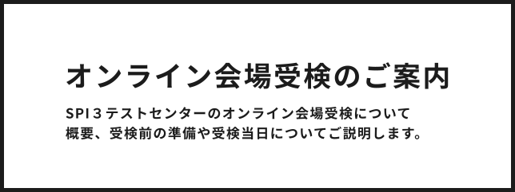

SCROLL

SCROLL
自宅などにパソコンを用意し、監督者とオンライン画面で接続し、監督を受けながら受検する方法です。 本人確認書類とパソコンなどの受検環境を用意すれば、会場に移動することなく自宅で受検できます。
オンライン会場では受付から検査終了までの間、 監督者がパソコン画面をリアルタイムで確認いたします。受検環境を確認する際には、監督者が室内を360度確認しますが、公平性の担保のためご理解いただけますようよろしくお願いいたします。なお、映像、PC画面、音声は監督者がオンライン上でリアルタイムに確認をしますが、録音、録画することはございません。
まず企業へエントリー後、企業から受検依頼メールを受け取ります。次に、受検依頼メールに従って性格適性検査のWeb受検と能力検査の受検予約を行います。詳しい流れや予約変更・キャンセル方法などは下記をご確認ください。
オペレーションシステム（OS）
日本語版 Windows10
日本語版 Windows11
日本語版 MacOS 10.13以降
ブラウザ
最新版のGoogle Chrome、Microsoft Edge（Chromium版）のみ
上記以外のブラウザでは正常に受検が完了できません
CPU
1GHz以上
メモリ（RAM）
4GB以上
インターネット
回線速度：上り/下りともに 10Mbps 相当以上
接続方法：無線やWi-Fiではなく、有線LANでの接続を推奨
ブラウザの拡大設定
100 ％となっていること
テキストサイズの設定
100 ％となっていること
ディスプレイの解像度
横：1024以上
縦：800以上
Webカメラ
フレームレート：10fps以上
解像度：640×480以上
カメラ種類：パソコン内蔵カメラ、外付けカメラのどちらも利用可能
※カメラは、受検者を正面から映す角度に設置されている必要があります
サウンド・マイク
オーディオとマイクがミュートにされていないこと
デバイス
タブレット、スマートフォンでは受検できません
オンライン会場受検では、受検環境を満たしている機材、環境をご準備ください。
パソコン
カメラ
オーディオ
上り下りともに10Mbps以上のインターネット回線環境をご用意ください。
無線（Wi-Fi）・テザリングではなく、有線接続を推奨しています。
※インターネット回線が不安定な場合は検査が実施できない場合がございます。
事前に回線速度を確認し条件を満たした環境の確保をお願いします。
下記の受検場所として必要な条件を確認して、ご自身で適切な受検環境を用意してください。
監督者から不適切な状態と判断される場合は、不正行為と見なす可能性があります。
★受検場所として必要な条件★
受検に必要な持ちものは以下のとおりです。
以下条件を1点で満たすものに限ります。
【有効な本人確認書類の例】
運転免許証、パスポートなど（その他はこちらをご確認ください）
例えば予約時に登録した氏名がカナ表記、本人確認書類の表記が漢字またはアルファベットで、読みの一致が確認できない場合、本人確認書類の氏名の読みの判別がつかない場合なども、受検することができません。


検査当日は、以下の写真のように、机の上には検査に必要なもの以外は何も置いていない状態にして、監督者と接続してください。
なお、受検環境に関する詳細な条件は、以下をご確認ください。
※受付時にカメラで部屋の中を360度映していただきます。
※お風呂場やお手洗いでの受検はできません。別の場所での受検をお願いします。